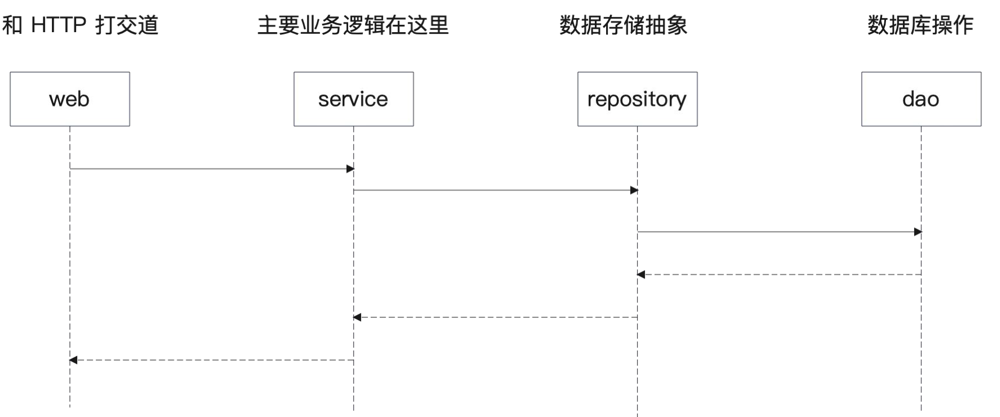

GORM
GORM 是一个 Go 语言的 ORM 框架，性能优秀，简单易用。
GORM 支持多种数据库，包括 mysql、PostgreSQL；支持简单查询，支持事务，也支持关联关系；支持钩子；支持自动迁移工具。
GORM 入门：增删改查
安装 GORM 依赖：
- 安装本体：go get -u gorm.io/gorm
- 安装对应数据库的驱动，注意 GORM 做了二次封装：go get -u gorm.io/driver/mysql
基本使用步骤：
- 初始化 DB 实例
- （可选）初始化表结构
- 发起查询
Product 定义
这个是直接源自 GORM 的例子。
type Product struct {
gorm.Model
Code string
Price uint
}
Product 组合了一个 gorm.Model。
type Model struct {
ID uint `gorm:"primarykey"`
CreatedAt time.Time
UpdatedAt time.Time
DeletedAt DeletedAt `gorm:"index"`
}
gorm.Model 里面已经提前定义好了四个公共字段。
其中，DeleteAt 代表这是一个希望软删除的模型。
在实践中，每个公司用的公共字段可能都不同。
模型定义
模型定义，我建议大家不要死记硬背，每次要用的时候就打开官方文档来看。
https://gorm.io/zh_CN/docs/models.html
比较常用的可以记一下。这个东西连面试也不会问，所以记不记都无所谓。
用户注册：存储用户基本信息
前面，我们已经把前端内容都搞好了，现在我们要把接收到的数据存储到数据库中。
为此我们需要准备一个数据库。
我们使用 docker-compose 来搭建开发环境所需的依赖。
设计项目结构
数据库相关代码放哪里？
数据库准备好了，现在就要考虑，数据库相关的增删改查代码放在哪里比较好？
能不能直接在 UserHandler 里面操作数据库？
不能。因为 Handler 只是负责和 HTTP 有关的东西。我们需要一个代表数据库抽象的东西。
引入 Service - Repostiory - DAO 三层结构
这里我们直接引入 Service - Repository - DAO 三层结构。其中 service、repostory 参考的是 DDD 设计。
service: 代表的是领域服务（domain service），代表一个业务的完整的处理过程。
repository：按照 DDD 的说法，是代表领域对象的存储，这里你直观理解为存储数据的抽象。
dao: 代表的是数据库操作。
同时，我们还需要一个 domain，代表领域对象。
如何理解这些东西？
为什么有 repository 之后，还要有 dao？repository 是一个整体抽象，它里面既可以考虑用ElasticSearch，也可以考虑使用 MySQL，还可以考虑用 MongoDB。所以它只代表数据存储，但是不代表数据库。
service 是拿来干嘛的？简单来说，就是组合各种 repository、domain，偶尔也会组合别的 service，来共同完成一个业务功能。
domain 又是什么？它被认为是业务在系统中的直接反应，或者你直接理解为一个业务对象，又或者就是一个现实对象在程序中的反应。
调用流程
总结起来，预期中的调用流程如下图。

改造代码
先创建一个 UserService，但是它基本上不做什么事情。
repository 也没做啥，最关键的都在 dao 里面。
定义用户模型
dao 中的 User 模型
你应该注意到，我们 dao 里面操作的并不是domain.User，而是定义了一个新的类型。
这是因为：domain.User 是业务概念，它不一定和数据库中表或者列完全对应得上。而 dao.User 则是直接映射到表里面的。
比如说，有些字段在数据库是 JSON 格式 ID 存储的，那么在domain 里面就会被转为结构体。
User 模型详解
暂时在我们的系统里面，只需要这么一点字段。
后面当你需要其它信息的时候，可以考虑加上诸如生日、学历之类的东西。
这里比较关键的两个点：
我们使用了自增主键，也就是数据库会帮我们生成主键。
Email 上被定义成唯一索引，也就是每个用户的邮箱不能冲突。
怎么建表呢？
一般在规范比较严格的公司里面，表结构变更都是要走审批流程的。相当于你提供 SQL 给你 leader 看，然后给 DBA 看，最后再由 DBA 在目标库上执行。
评审最重要的就是看你的索引对不对。
不过在中小企业，可以考虑使用 GORM 自带的建表功能，也就是前面你看到的。
后续有新的数据要存储，都要来这里初始化一下表。
func InitTables(db *gorm.DB) error {
return db.AutoMigrate(&User{})
}
怎么建表呢？
后续有新的数据要存储，都要来这里初始化一下表。
初始化结构体
因为从 UserHandler 到 UserDAO 都修改了，里面都有一些字段，所以我们需要考虑初始化这些东西。
这里，我直接按照将来准备使用的依赖注入来准备初始化过程。
现在为每一个类都加上一个对应的初始化方法 NewXXX。
main 函数
在 main 函数里，组装好全部东西，而后抽取到不同的方法里面。